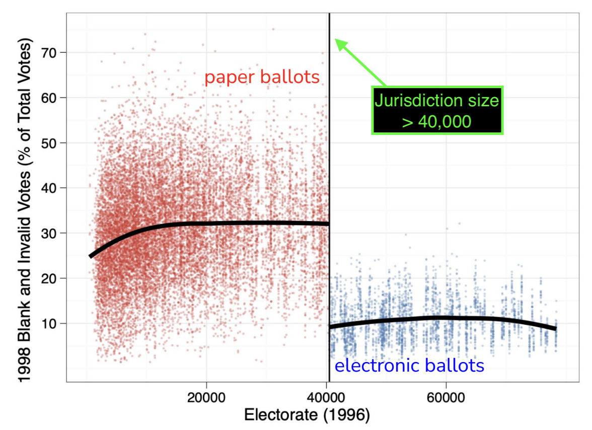
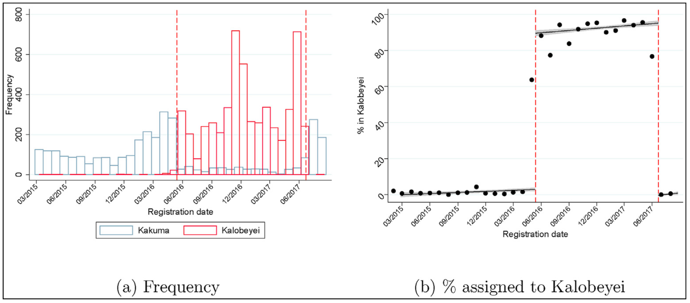
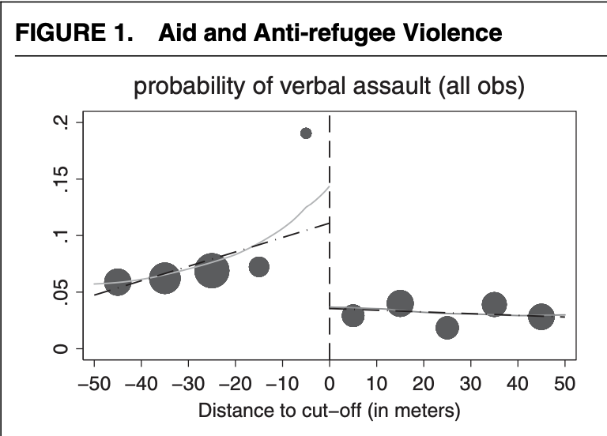
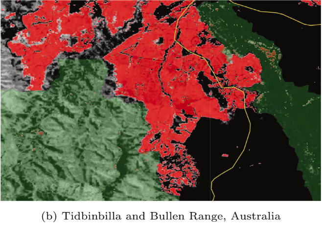
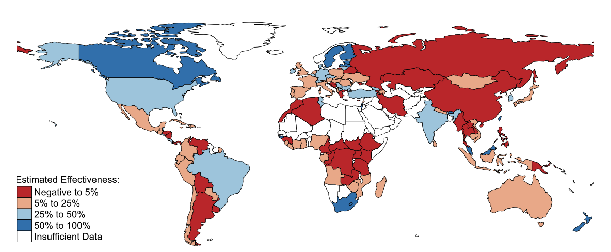
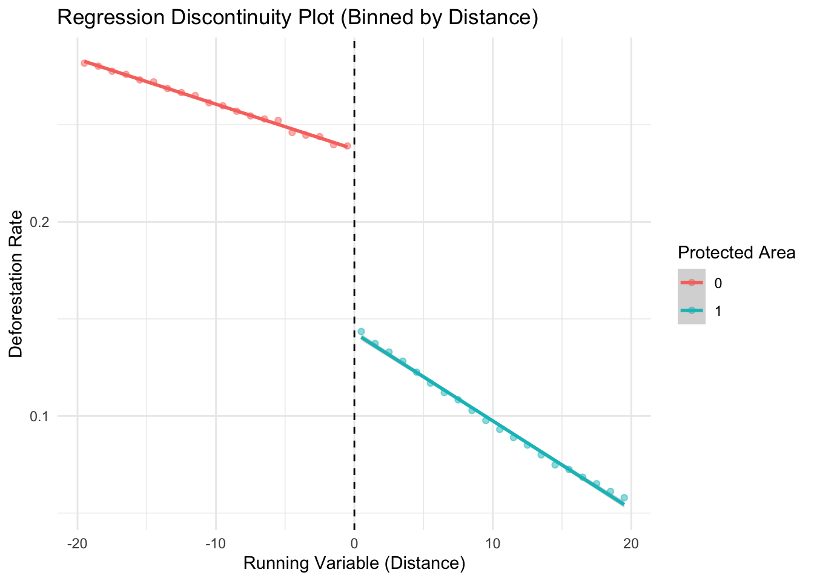
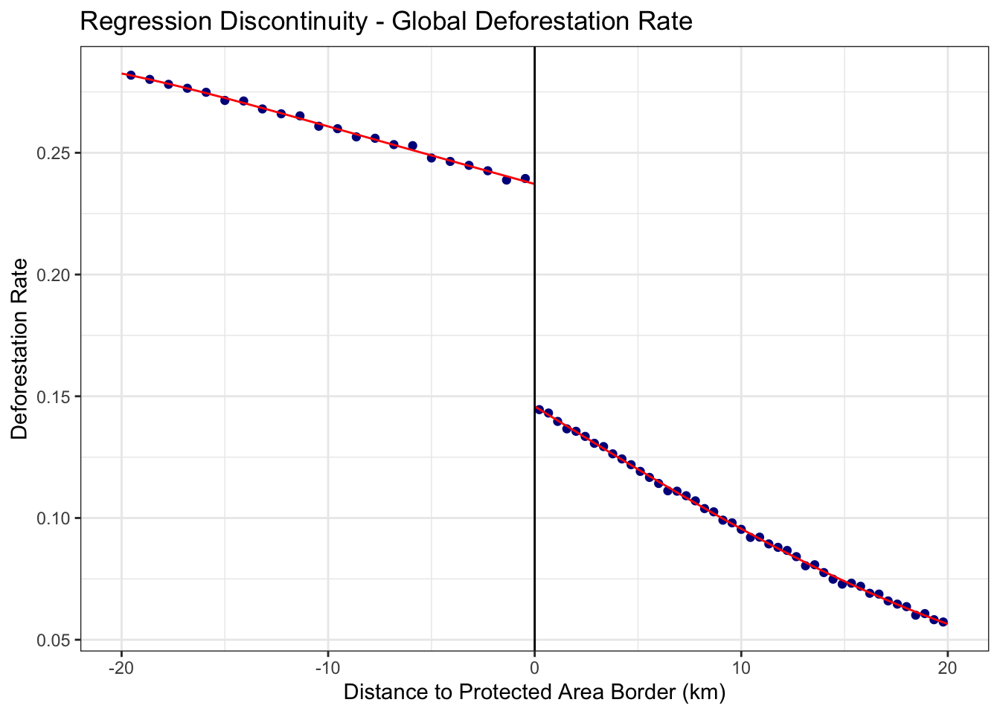
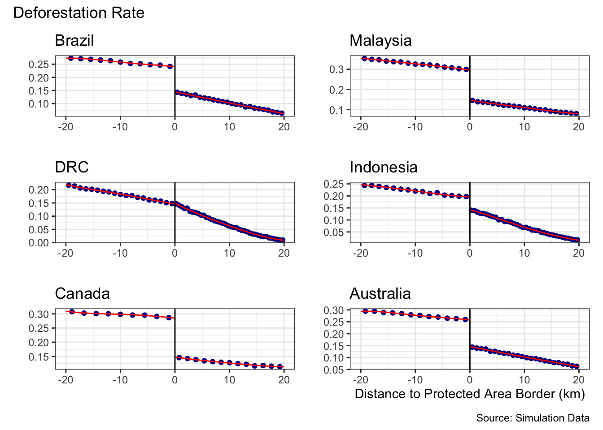

library(tidyverse)
library(rdrobust)
library(here)
library(jtools)
library(janitor)
library(patchwork)↯ Estimating Regression Discontinuity Designs (RDD)
A rough replication using simulated data following the analyses in Neal, 2024
Applications of Regression Discontinuity Designs (RDD)
⏱️ Discontinuities occur when thresholds are imposed arbitrarily leading to 'as-if random' assignment
Humans create arbitrary boundaries/thresholds all the time!

⏱️ Discontinuity events in time (MacPherson & Sterck, 2021)
Figure 2: “Assignment of South-Sudanese households to Kakuma and Kalobeyei”

🗺️ Geographic discontinuities (Lehmann & Masterson, 2020)
Threshold: Altitude > 50 meters

📜 Methods review: Keele & Titiunik, 2014 - Geographic Boundaries as Regression Discontinuities
Geographic discontinuities - protected area boundaries (Neal, 2024)
Figure 1 (Neal, 2024): Protected area (green) & deforestation (red)

📜 Neal 2024 - “Estimating the Effectiveness of Forest Protection using Regression Discontinuity”
Figure 5 (Neal, 24): Effectiveness of forest protection from 2000–2022

RDD regression equation:
\(Y_i = \beta_0 + \beta_1 D_i + \beta_2 X_i + \beta_3 (D_i \cdot X_i) + \epsilon_i\)
- \(Y_i\): Outcome variable (
Deforestation rate) - \(D_i\): Treatment indicator (
Protected area) - \(X_i\): Running variable (
Distance to Protected Area Border (km)) - \(D_i \cdot X_i\): Interaction term that allows slope vary across threshold
- \(\epsilon_i\): Error term
Load packages
Read in simulated data to roughly replicate analyses in Neal, 24
sim_data <- read_csv(here("data", "Simulated_Deforestation_Data5.csv")) Visualize the discontinuity using binned means (bin size = 1)
data_binned <- sim_data %>%
mutate(distance_bin = cut(distance, breaks = seq(-20, 20, by = 1), include.lowest = TRUE)) %>%
group_by(distance_bin, protected) %>%
summarize(
avg_distance = mean(distance), # Averaged binned distance
avg_deforest = mean(deforest),
.groups = "drop"
)Plot using binned data
ggplot(data_binned, aes(x = avg_distance, y = avg_deforest, color = as.factor(protected))) +
geom_point(alpha = 0.5) +
geom_smooth(method = "lm", aes(group = protected), se = TRUE) +
geom_vline(xintercept = 0, linetype = "dashed", color = "black") +
labs(title = "Regression Discontinuity Plot (Binned by Distance)",
x = "Running Variable (Distance)", y = "Deforestation Rate",
color = "Protected Area") +
theme_minimal()
Run RDD analysis using OLS
rdd_ols <- lm(
deforest ~ # outcome
protected + # treatment effect
distance + # running variable
protected*distance + # allows slope to vary
slope_cat + road_cat + water_cat + soil_cat, # <<< CONTROLS
data = sim_data)
# Display summary of regression results
summ(rdd_ols, digits = 3,
model.info = FALSE, model.fit = FALSE)| Est. | S.E. | t val. | p | |
|---|---|---|---|---|
| (Intercept) | 0.298 | 0.001 | 475.575 | 0.000 |
| protected | -0.094 | 0.000 | -253.637 | 0.000 |
| distance | -0.002 | 0.000 | -101.864 | 0.000 |
| slope_cat | 0.019 | 0.000 | 103.900 | 0.000 |
| road_cat | -0.104 | 0.000 | -526.436 | 0.000 |
| water_cat | 0.013 | 0.001 | 23.983 | 0.000 |
| soil_cat | -0.018 | 0.000 | -87.815 | 0.000 |
| protected:distance | -0.002 | 0.000 | -68.857 | 0.000 |
| Standard errors: OLS |
Tip
🚫 P-values (p) & standard errors (S.E.) are never zero!
*Output values are printed 0.000 due to rounding settings
Estimate & Visialize RDD using {rdrobust}
📜 Article - {rdrobust} package
RDD Robust Estimation Method (local polynomial regression):
Local polynomial regression is a method used to give more weight to observations near a specific point— in this case, the RDD threshold. Instead of using OLS, it fits separate non-linear regressions on either side of the cutoff using a subset of the data near the cutoff (i.e., bandwidth).
Interpreting output:
Default estimation options used by the rdrobust() function:
- Bandwidth Optimization (
BW type: mserd): Bandwidth is optimized to balance accuracy & bias. - Bandwidth Estimate (
BW est. (h) = 5.729): The estimated range around the cutoff used to subset the data to estimate the treatment effect. - Kernel (
Triangular): Gives higher weight to data points close to the cutoff. - Variance Estimation (
VCE method: NN): Instead of assuming equal variance across all observations, the error estimates are adjusted to account for variability near the cutoff.
Take a random sample (To adjust for memory-limit & speed)
global_samp <- sim_data %>%
sample_n(size = nrow(sim_data) * 1.0) # <<< e.g., .5 for 50%Estimate Global RDD
global_rdd <- rdrobust(
y = global_samp$deforest, # Outcome
x = global_samp$distance, # Running variable
covs = global_samp %>% select(slope_cat, road_cat, water_cat, soil_cat), # Controls
c = 0, # Cutoff at 0 (protected area boundary)
kernel = "triangular"
)
# Print summary of results
summary(global_rdd)Covariate-adjusted Sharp RD estimates using local polynomial regression.
Number of Obs. 600000
BW type mserd
Kernel Triangular
VCE method NN
Number of Obs. 299889 300111
Eff. Number of Obs. 85646 86071
Order est. (p) 1 1
Order bias (q) 2 2
BW est. (h) 5.729 5.729
BW bias (b) 9.034 9.034
rho (h/b) 0.634 0.634
Unique Obs. 299889 300111
=============================================================================
Method Coef. Std. Err. z P>|z| [ 95% C.I. ]
=============================================================================
Conventional -0.092 0.001 -118.135 0.000 [-0.093 , -0.090]
Robust - - -99.939 0.000 [-0.094 , -0.090]
=============================================================================Visualize the RDD discontinuity using rdplot():
This plot presents the local polynomial regression curves fit on either side of the cutoff.
rdplot(
y = sim_data$deforest,
x = sim_data$distance,
c = 0,
binselect = "es",
title = "Regression Discontinuity - Global Deforestation Rate",
x.label = "Distance to Protected Area Border (km)",
y.label = "Deforestation Rate"
)
Estimate separate RDD models by country using a loop function 🔄
Country levels: Brazil, DRC, Malaysia, Indonesia, Canada, Australia
Tip
What is an iterator or loop function?
lapply() loops across the input levels for country and applies the function run_country_rdd
run_country_rdd <- function(country_name) {
df_country <- sim_data %>% filter(country == country_name)
rdd_model <- rdrobust(
y = df_country$deforest,
x = df_country$distance,
covs = df_country %>% select(slope_cat, road_cat, water_cat, soil_cat),
c = 0,
p = 1,
kernel = "triangular"
)
}
# Apply the function to all countries
rdd_6country <- lapply(unique(sim_data$country), run_country_rdd)
# Print summary for `DRC`
summary(rdd_6country[[3]]) Covariate-adjusted Sharp RD estimates using local polynomial regression.
Number of Obs. 100000
BW type mserd
Kernel Triangular
VCE method NN
Number of Obs. 50031 49969
Eff. Number of Obs. 15992 16021
Order est. (p) 1 1
Order bias (q) 2 2
BW est. (h) 6.369 6.369
BW bias (b) 11.882 11.882
rho (h/b) 0.536 0.536
Unique Obs. 50031 49969
=============================================================================
Method Coef. Std. Err. z P>|z| [ 95% C.I. ]
=============================================================================
Conventional 0.001 0.001 0.773 0.440 [-0.002 , 0.004]
Robust - - 1.049 0.294 [-0.001 , 0.005]
=============================================================================Generate country-level discontinuity plots
# Create list to store plots
plot_list <- list()
# Loop across 6 countries and plot
for (country_name in unique(sim_data$country)) {
df_country <- sim_data %>% filter(country == country_name)
p <- rdplot(
y = df_country$deforest,
x = df_country$distance,
c = 0,
binselect = "es",
title = paste(country_name),
x.label="", y.label = "")
p <- p$rdplot +
labs(x=" ",y="")
plot_list[[country_name]] <- p # Store each plot in the list
}Print combined RDD plots
final_plot <- wrap_plots(plot_list) +
plot_layout(ncol = 2) +
plot_annotation(
title = "Deforestation Rate",
caption = "Source: Simulation Data"
)final_plot +
labs(x = "Distance to Protected Area Border (km)")
[1] "YAY! 🚀 Great work 241 - You are spectacular! 💫"
---------
< The End >
---------
\
\
_,
-==<' `
) /
/ (_.
| ,-,`\
\\ \ \
`\, \ \
||\ \`|,
jgs _|| `=`-'
~~`~`